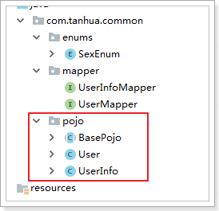
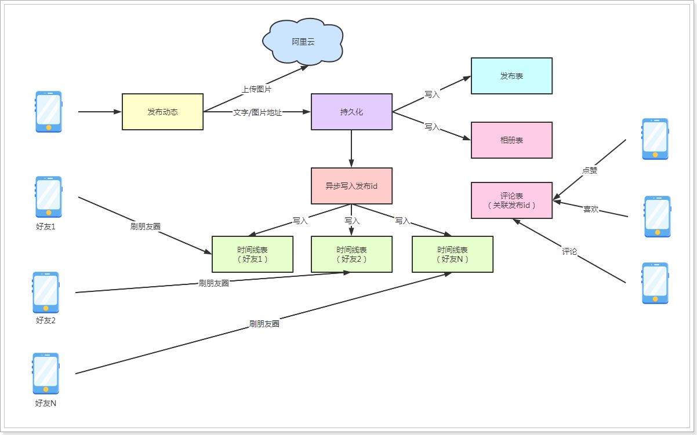
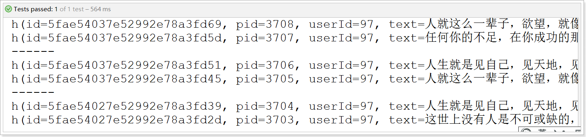
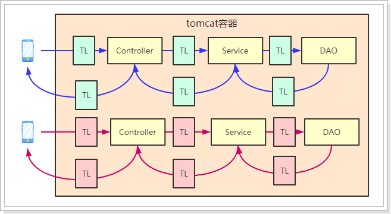

day04
课程说明¶
- 抽取common工程
- 圈子功能说明
- 圈子技术实现
- 圈子技术方案
- 圈子实现发布动态
- 圈子实现好友动态
- 圈子实现推荐动态
1、抽取common工程¶
在项目中一般需要将公用的对象进行抽取放到common工程中，其他的工程依赖此工程即可。下面我们将sso以及server工程中的公用的对象进行抽取。
1.1、创建my-tanhua-common工程¶
<?xml version="1.0" encoding="UTF-8"?>
<project xmlns="http://maven.apache.org/POM/4.0.0"
xmlns:xsi="http://www.w3.org/2001/XMLSchema-instance"
xsi:schemaLocation="http://maven.apache.org/POM/4.0.0 http://maven.apache.org/xsd/maven-4.0.0.xsd">
<parent>
<artifactId>my-tanhua</artifactId>
<groupId>cn.itcast.tanhua</groupId>
<version>1.0-SNAPSHOT</version>
</parent>
<modelVersion>4.0.0</modelVersion>
<artifactId>my-tanhua-common</artifactId>
<dependencies>
<dependency>
<groupId>org.projectlombok</groupId>
<artifactId>lombok</artifactId>
</dependency>
<dependency>
<groupId>com.baomidou</groupId>
<artifactId>mybatis-plus-boot-starter</artifactId>
</dependency>
<dependency>
<groupId>com.fasterxml.jackson.core</groupId>
<artifactId>jackson-databind</artifactId>
</dependency>
</dependencies>
</project>
1.2、通用枚举¶
将SexEnum枚举移动至common工程，并且后续创建的枚举也要放到次工程中，以达到公用的目的。
package com.tanhua.common.enums;
import com.baomidou.mybatisplus.core.enums.IEnum;
public enum SexEnum implements IEnum<Integer> {
MAN(1,"男"),
WOMAN(2,"女"),
UNKNOWN(3,"未知");
private int value;
private String desc;
SexEnum(int value, String desc) {
this.value = value;
this.desc = desc;
}
@Override
public Integer getValue() {
return this.value;
}
@Override
public String toString() {
return this.desc;
}
}
需要修改server与sso工程中的application.properties配置：
# 枚举包扫描
mybatis-plus.type-enums-package=com.tanhua.common.enums
将server与sso工程中的SexEnum对象删除以及将相关的类引用进行修改。
1.3、抽取mapper¶
需要将UserInfoMapper以及UserMapper放置到common工程的com.tanhua.common.mapper包下。
package com.tanhua.common.mapper;
import com.baomidou.mybatisplus.core.mapper.BaseMapper;
import com.tanhua.common.pojo.User;
public interface UserMapper extends BaseMapper<User> {
}
package com.tanhua.common.mapper;
import com.baomidou.mybatisplus.core.mapper.BaseMapper;
import com.tanhua.common.pojo.UserInfo;
public interface UserInfoMapper extends BaseMapper<UserInfo> {
}
说明：抽取完成后，需要将原工程的代码删除以及修改其他代码中引入的依赖。
1.4、抽取pojo¶
将BasePojo、User、UserInfo移动至common工程：

1.5、抽取utils¶
将server工程的utils进行抽取公用，后续的工具类也放置到common工程中。

抽取完成后进行测试，确保可以正常启动以及功能都正常。
2、圈子功能¶
2.1、功能说明¶
探花交友项目中的圈子功能，类似微信的朋友圈，基本的功能为：发布动态、浏览好友动态、浏览推荐动态、点赞、评论、喜欢等功能。
发布：

2.2、实现方案分析¶
对于圈子功能的实现，我们需要对它的功能特点做分析：
- 数据量会随着用户数增大而增大
- 读多写少，一般而言，浏览朋友圈动态会多一些，发动态相对就会少一些
- 非好友看不到其动态内容
- ……
针对以上特点，我们来分析一下：
- 对于数据量大而言，显然不能够使用关系型数据库进行存储，我们需要通过MongoDB进行存储
- 对于读多写少的应用，尽可能的减少读取数据的成本
- 比如说，一条SQL语句，单张表查询一定比多张表查询要快
- 条件越多的查询速度将越慢，尽可能的减少条件以提升查询速度
所以对于存储而言，主要是核心的4张表：
- 发布表：记录了所有用户的发布的东西信息，如图片、视频等。
- 相册：相册是每个用户独立的，记录了该用户所发布的所有内容。
- 评论：针对某个具体发布的朋友评论和点赞操作。
- 时间线：所谓“刷朋友圈”，就是刷时间线，就是一个用户所有的朋友的发布内容。
流程：

流程说明：
- 用户发布动态，动态中一般包含了图片和文字，图片上传到阿里云，上传成功后拿到图片地址，将文字和图片地址进行持久化存储
- 首先，需要将动态数据写入到发布表中，其次，再写入到自己的相册表中，需要注意的是，相册表中只包含了发布id，不会冗余存储发布数据
- 最后，需要将发布数据异步的写入到好友的时间线表中，之所以考虑异步操作，是因为希望发布能够尽快给用户反馈，发布成功
- 好友刷朋友圈时，实际上只需要查询自己的时间线表即可，这样最大限度的提升了查询速度，再配合redis的缓存，那速度将是飞快的
- 用户在对动态内容进行点赞、喜欢、评论操作时，只需要写入到评论表即可，该表中也是只会记录发布id，并不会冗余存储发布数据
2.3、表结构设计¶
发布表：
#表名：quanzi_publish
{
"_id":"5fae53d17e52992e78a3db61",#主键id
"pid":1001, #发布id（Long类型）
"userId":1, #用户id
"text":"今天心情很好", #文本内容
"medias":"http://xxxx/x/y/z.jpg", #媒体数据，图片或小视频 url
"seeType":1, #谁可以看，1-公开，2-私密，3-部分可见，4-不给谁看
"seeList":[1,2,3], #部分可见的列表
"notSeeList":[4,5,6],#不给谁看的列表
"longitude":108.840974298098,#经度
"latitude":34.2789316522934,#纬度
"locationName":"上海市浦东区", #位置名称
"created",1568012791171 #发布时间
}
相册表：
#表名：quanzi_album_{userId}
{
"_id":"5fae539d7e52992e78a3b684",#主键id
"publishId":"5fae53d17e52992e78a3db61", #发布id
"created":1568012791171 #发布时间
}
时间线表：
#表名：quanzi_time_line_{userId}
{
"_id":"5fae539b7e52992e78a3b4ae",#主键id,
"userId":2, #好友id
"publishId":"5fae53d17e52992e78a3db61", #发布id
"date":1568012791171 #发布时间
}
评论表：
#表名：quanzi_comment
{
"_id":"5fae539d7e52992e78a3b648", #主键id
"publishId":"5fae53d17e52992e78a3db61", #发布id
"commentType":1, #评论类型，1-点赞，2-评论，3-喜欢
"content":"给力！", #评论内容
"userId":2, #评论人
"publishUserId":9, #发布动态的人的id
"isParent":false, #是否为父节点，默认是否
"parentId":1001, #父节点id
"created":1568012791171
}
3、好友关系数据¶
由于圈子中会涉及的好友关系数据，虽然现在主线是开发圈子功能，但是也需要对于好友关系有所了解，在我们提供的Mongodb数据库中有一些mock数据。
好友关系结构：
package com.tanhua.dubbo.server.pojo;
import lombok.AllArgsConstructor;
import lombok.Data;
import lombok.NoArgsConstructor;
import org.bson.types.ObjectId;
import org.springframework.data.mongodb.core.mapping.Document;
@Data
@NoArgsConstructor
@AllArgsConstructor
@Document(collection = "tanhua_users")
public class Users implements java.io.Serializable{
private static final long serialVersionUID = 6003135946820874230L;
private ObjectId id;
private Long userId; //用户id
private Long friendId; //好友id
private Long date; //时间
}
在mock数据中，为每个用户构造了10个好友数据：

4、查询好友动态¶
查询好友动态与查询推荐动态显示的结构是一样的，只是其查询数据源不同：
4.1、基础代码¶
在my-tanhua-dubbo-interface中编写：
package com.tanhua.dubbo.server.pojo;
import lombok.AllArgsConstructor;
import lombok.Data;
import lombok.NoArgsConstructor;
import org.bson.types.ObjectId;
import org.springframework.data.annotation.Id;
import org.springframework.data.mongodb.core.mapping.Document;
import java.util.Date;
import java.util.List;
/**
* 发布表，动态内容
*/
@Data
@NoArgsConstructor
@AllArgsConstructor
@Document(collection = "quanzi_publish")
public class Publish implements java.io.Serializable {
private static final long serialVersionUID = 8732308321082804771L;
@Id
private ObjectId id; //主键id
private Long pid; //发布id
private Long userId; //发布用户id
private String text; //文字
private List<String> medias; //媒体数据，图片或小视频 url
private Integer seeType; // 谁可以看，1-公开，2-私密，3-部分可见，4-不给谁看
private List<Long> seeList; //部分可见的列表
private List<Long> notSeeList; //不给谁看的列表
private String longitude; //经度
private String latitude; //纬度
private String locationName; //位置名称
private Long created; //发布时间
}
package com.tanhua.dubbo.server.pojo;
import lombok.AllArgsConstructor;
import lombok.Data;
import lombok.NoArgsConstructor;
import org.bson.types.ObjectId;
import org.springframework.data.annotation.Id;
import org.springframework.data.mongodb.core.mapping.Document;
import java.util.Date;
/**
* 相册表，用于存储自己发布的数据，每一个用户一张表进行存储
*/
@Data
@NoArgsConstructor
@AllArgsConstructor
@Document(collection = "quanzi_album_{userId}")
public class Album implements java.io.Serializable {
private static final long serialVersionUID = 432183095092216817L;
@Id
private ObjectId id; //主键id
private ObjectId publishId; //发布id
private Long created; //发布时间
}
package com.tanhua.dubbo.server.pojo;
import lombok.AllArgsConstructor;
import lombok.Data;
import lombok.NoArgsConstructor;
import org.bson.types.ObjectId;
import org.springframework.data.annotation.Id;
import org.springframework.data.mongodb.core.mapping.Document;
import java.util.Date;
/**
* 时间线表，用于存储发布的数据，每一个用户一张表进行存储
*/
@Data
@NoArgsConstructor
@AllArgsConstructor
@Document(collection = "quanzi_time_line_{userId}")
public class TimeLine implements java.io.Serializable {
private static final long serialVersionUID = 9096178416317502524L;
@Id
private ObjectId id;
private Long userId; // 好友id
private ObjectId publishId; //发布id
private Long date; //发布的时间
}
package com.tanhua.dubbo.server.pojo;
import lombok.AllArgsConstructor;
import lombok.Data;
import lombok.NoArgsConstructor;
import org.bson.types.ObjectId;
import org.springframework.data.annotation.Id;
import org.springframework.data.mongodb.core.mapping.Document;
import java.util.Date;
/**
* 评论表
*/
@Data
@NoArgsConstructor
@AllArgsConstructor
@Document(collection = "quanzi_comment")
public class Comment implements java.io.Serializable{
private static final long serialVersionUID = -291788258125767614L;
@Id
private ObjectId id;
private ObjectId publishId; //发布id
private Integer commentType; //评论类型，1-点赞，2-评论，3-喜欢
private String content; //评论内容
private Long userId; //评论人
private Long publishUserId; //发布动态的用户id
private Boolean isParent = false; //是否为父节点，默认是否
private ObjectId parentId; // 父节点id
private Long created; //发表时间
}
4.2、dubbo服务¶
圈子的具体业务逻辑的实现需要在dubbo中完成，所以需要开发dubbo服务。
4.2.1、定义接口¶
在my-tanhua-dubbo-interface工程中：
package com.tanhua.dubbo.server.api;
import com.tanhua.dubbo.server.pojo.Publish;
import com.tanhua.dubbo.server.vo.PageInfo;
public interface QuanZiApi {
/**
* 查询好友动态
*
* @param userId 用户id
* @param page 当前页数
* @param pageSize 每一页查询的数据条数
* @return
*/
PageInfo<Publish> queryPublishList(Long userId, Integer page, Integer pageSize);
}
4.2.2、实现接口¶
在my-tanhua-dubbo-service中完成：
package com.tanhua.dubbo.server.api;
import cn.hutool.core.collection.CollUtil;
import com.alibaba.dubbo.config.annotation.Service;
import com.tanhua.dubbo.server.pojo.Publish;
import com.tanhua.dubbo.server.pojo.TimeLine;
import com.tanhua.dubbo.server.vo.PageInfo;
import org.bson.types.ObjectId;
import org.springframework.beans.factory.annotation.Autowired;
import org.springframework.data.domain.PageRequest;
import org.springframework.data.domain.Pageable;
import org.springframework.data.domain.Sort;
import org.springframework.data.mongodb.core.MongoTemplate;
import org.springframework.data.mongodb.core.query.Criteria;
import org.springframework.data.mongodb.core.query.Query;
import java.util.ArrayList;
import java.util.List;
@Service(version = "1.0.0")
public class QuanZiApiImpl implements QuanZiApi {
@Autowired
private MongoTemplate mongoTemplate;
@Override
public PageInfo<Publish> queryPublishList(Long userId, Integer page, Integer pageSize) {
//分析：查询好友的动态，实际上查询时间线表
PageInfo<Publish> pageInfo = new PageInfo<>();
pageInfo.setPageNum(page);
pageInfo.setPageSize(pageSize);
Pageable pageable = PageRequest.of(page - 1, pageSize,
Sort.by(Sort.Order.desc("date")));
Query query = new Query().with(pageable);
List<TimeLine> timeLineList = this.mongoTemplate.find(query, TimeLine.class, "quanzi_time_line_" + userId);
if(CollUtil.isEmpty(timeLineList)){
//没有查询到数据
return pageInfo;
}
//获取时间线列表中的发布id的列表
List<Object> ids = CollUtil.getFieldValues(timeLineList, "publishId");
//根据动态id查询动态列表
Query queryPublish = Query.query(Criteria.where("id").in(ids))
.with(Sort.by(Sort.Order.desc("created")));
List<Publish> publishList = this.mongoTemplate.find(queryPublish, Publish.class);
pageInfo.setRecords(publishList);
return pageInfo;
}
}
引入Hutool工具包，官方文档：https://www.hutool.cn/docs/#/
<!-- 在my-tanhua工程中定义依赖 -->
<dependency>
<groupId>cn.hutool</groupId>
<artifactId>hutool-all</artifactId>
<version>5.5.2</version>
</dependency>
<!-- 在my-tanhua-dubbo-service中引入使用 -->
<dependency>
<groupId>cn.hutool</groupId>
<artifactId>hutool-all</artifactId>
</dependency>
4.2.3、测试用例¶
package com.tanhua.dubbo.server.api;
import com.tanhua.dubbo.server.pojo.Publish;
import com.tanhua.dubbo.server.vo.PageInfo;
import org.junit.Test;
import org.junit.runner.RunWith;
import org.springframework.beans.factory.annotation.Autowired;
import org.springframework.boot.test.context.SpringBootTest;
import org.springframework.test.context.junit4.SpringRunner;
@RunWith(SpringRunner.class)
@SpringBootTest
public class TestQuanZiApi {
@Autowired
private QuanZiApi quanZiApi;
@Test
public void testQueryPublishList(){
this.quanZiApi.queryPublishList(1L, 1, 2)
.getRecords().forEach(publish -> System.out.println(publish));
System.out.println("------------");
this.quanZiApi.queryPublishList(1L, 2, 2)
.getRecords().forEach(publish -> System.out.println(publish));
System.out.println("------------");
this.quanZiApi.queryPublishList(1L, 3, 2)
.getRecords().forEach(publish -> System.out.println(publish));
}
}
测试结果： 
4.3、APP接口服务¶
开发完成dubbo服务后，我们将开发APP端的接口服务，依然是需要按照mock接口的中的接口定义实现。
接口地址：https://mock-java.itheima.net/project/35/interface/api/683
4.3.1、QuanZiVo¶
根据接口中响应的数据结构进行定义vo对象：(在my-tanhua-server工程中)
package com.tanhua.server.vo;
import lombok.AllArgsConstructor;
import lombok.Data;
import lombok.NoArgsConstructor;
@Data
@NoArgsConstructor
@AllArgsConstructor
public class QuanZiVo {
private String id; //动态id
private Long userId; //用户id
private String avatar; //头像
private String nickname; //昵称
private String gender; //性别 man woman
private Integer age; //年龄
private String[] tags; //标签
private String textContent; //文字动态
private String[] imageContent; //图片动态
private String distance; //距离
private String createDate; //发布时间 如: 10分钟前
private Integer likeCount; //点赞数
private Integer commentCount; //评论数
private Integer loveCount; //喜欢数
private Integer hasLiked; //是否点赞（1是，0否）
private Integer hasLoved; //是否喜欢（1是，0否）
}
4.3.2、QuanZiController¶
根据服务接口编写QuanZiController，其请求方法为GET请求，会传递page、pageSize、token等信息。
代码实现如下：
package com.tanhua.server.controller;
import com.tanhua.server.service.QuanZiService;
import com.tanhua.server.vo.PageResult;
import org.springframework.beans.factory.annotation.Autowired;
import org.springframework.web.bind.annotation.*;
@RestController
@RequestMapping("movements")
public class QuanZiController {
@Autowired
private QuanZiService quanZiService;
/**
* 查询好友动态
*
* @param page
* @param pageSize
* @return
*/
@GetMapping
public PageResult queryPublishList(@RequestParam(value = "page", defaultValue = "1") Integer page,
@RequestParam(value = "pagesize", defaultValue = "10") Integer pageSize,
@RequestHeader("Authorization") String token) {
return this.quanZiService.queryPublishList(page, pageSize, token);
}
}
4.3.3、QuanZiService¶
在QuanZiService中将实现具体的业务逻辑，需要调用quanzi的dubbo服务完成数据的查询，并且要完成用户登录是否有效的校验，最后按照服务接口中定义的结构进行封装数据。
package com.tanhua.server.service;
import cn.hutool.core.bean.BeanUtil;
import cn.hutool.core.collection.CollUtil;
import cn.hutool.core.util.StrUtil;
import com.alibaba.dubbo.config.annotation.Reference;
import com.tanhua.common.pojo.User;
import com.tanhua.common.pojo.UserInfo;
import com.tanhua.common.utils.RelativeDateFormat;
import com.tanhua.dubbo.server.api.QuanZiApi;
import com.tanhua.dubbo.server.pojo.Publish;
import com.tanhua.dubbo.server.vo.PageInfo;
import com.tanhua.server.vo.PageResult;
import com.tanhua.server.vo.QuanZiVo;
import org.apache.commons.lang3.StringUtils;
import org.springframework.beans.factory.annotation.Autowired;
import org.springframework.stereotype.Service;
import java.util.ArrayList;
import java.util.Date;
import java.util.List;
@Service
public class QuanZiService {
@Reference(version = "1.0.0")
private QuanZiApi quanZiApi;
@Autowired
private UserService userService;
@Autowired
private UserInfoService userInfoService;
public PageResult queryPublishList(Integer page, Integer pageSize, String token) {
//分析：通过dubbo中的服务查询用户的好友动态
//通过mysql查询用户的信息，回写到结果对象中（QuanZiVo）
PageResult pageResult = new PageResult();
pageResult.setPage(page);
pageResult.setPagesize(pageSize);
//校验token是否有效
User user = this.userService.queryUserByToken(token);
if (user == null) {
//token已经失效
return pageResult;
}
//通过dubbo查询数据
PageInfo<Publish> pageInfo = this.quanZiApi.queryPublishList(user.getId(), page, pageSize);
List<Publish> records = pageInfo.getRecords();
if (CollUtil.isEmpty(records)) {
return pageResult;
}
List<QuanZiVo> quanZiVoList = new ArrayList<>();
records.forEach(publish -> {
QuanZiVo quanZiVo = new QuanZiVo();
quanZiVo.setId(publish.getId().toHexString());
quanZiVo.setTextContent(publish.getText());
quanZiVo.setImageContent(publish.getMedias().toArray(new String[]{}));
quanZiVo.setUserId(publish.getUserId());
quanZiVo.setCreateDate(RelativeDateFormat.format(new Date(publish.getCreated())));
quanZiVoList.add(quanZiVo);
});
//查询用户信息
List<Object> userIds = CollUtil.getFieldValues(records, "userId");
List<UserInfo> userInfoList = this.userInfoService.queryUserInfoByUserIdList(userIds);
for (QuanZiVo quanZiVo : quanZiVoList) {
//找到对应的用户信息
for (UserInfo userInfo : userInfoList) {
if(quanZiVo.getUserId().longValue() == userInfo.getUserId().longValue()){
this.fillUserInfoToQuanZiVo(userInfo, quanZiVo);
break;
}
}
}
pageResult.setItems(quanZiVoList);
return pageResult;
}
/**
* 填充用户信息
*
* @param userInfo
* @param quanZiVo
*/
private void fillUserInfoToQuanZiVo(UserInfo userInfo, QuanZiVo quanZiVo){
BeanUtil.copyProperties(userInfo, quanZiVo, "id");
quanZiVo.setGender(userInfo.getSex().name().toLowerCase());
quanZiVo.setTags(StringUtils.split(userInfo.getTags(), ','));
quanZiVo.setCommentCount(0); //TODO 评论数
quanZiVo.setDistance("1.2公里"); //TODO 距离
quanZiVo.setHasLiked(0); //TODO 是否点赞（1是，0否）
quanZiVo.setLikeCount(0); //TODO 点赞数
quanZiVo.setHasLoved(0); //TODO 是否喜欢（1是，0否）
quanZiVo.setLoveCount(0); //TODO 喜欢数
}
}
// com.tanhua.server.service.UserInfoService
/**
* 根据用户id的集合查询用户列表
*
* @param userIds
* @return
*/
public List<UserInfo> queryUserInfoList(Collection<?> userIds) {
QueryWrapper<UserInfo> queryWrapper = new QueryWrapper<>();
queryWrapper.in("user_id", userIds);
return this.queryUserInfoList(queryWrapper);
}
在com.tanhua.server.vo.QuanZiVo中增加字段别名，方便直接拷贝属性数据：
package com.tanhua.server.vo;
import cn.hutool.core.annotation.Alias;
import lombok.AllArgsConstructor;
import lombok.Data;
import lombok.NoArgsConstructor;
@Data
@NoArgsConstructor
@AllArgsConstructor
public class QuanZiVo {
private String id; //动态id
private Long userId; //用户id
@Alias("logo") //别名
private String avatar; //头像
@Alias("nickName") //别名
private String nickname; //昵称
private String gender; //性别 man woman
private Integer age; //年龄
private String[] tags; //标签
private String textContent; //文字动态
private String[] imageContent; //图片动态
private String distance; //距离
private String createDate; //发布时间 如: 10分钟前
private Integer likeCount; //点赞数
private Integer commentCount; //评论数
private Integer loveCount; //喜欢数
private Integer hasLiked; //是否点赞（1是，0否）
private Integer hasLoved; //是否喜欢（1是，0否）
}
4.3.4、测试¶

5、统一校验token¶
在之前的开发中，我们会在每一个Service中对token做处理，相同的逻辑一定是要进行统一处理的，该如何处理呢？
由于程序是运行在web容器中，每一个HTTP请求都是一个独立线程，也就是可以理解成我们编写的应用程序运行在一个多线程的环境中，那么我们就可以使用ThreadLocal在HTTP请求的生命周期内进行存值、取值操作。
如下图：

说明：
- 用户的每一个请求，都是一个独立的线程
- 图中的TL就是ThreadLocal，一旦将数据绑定到ThreadLocal中，那么在整个请求的生命周期内都可以随时拿到ThreadLocal中当前线程的数据。
根据上面的分析，我们只需要在Controller请求之前进行对token做校验，如果token有效，则会拿到User对象，然后将该User对象保存到ThreadLocal中即可，最后放行请求，在后续的各个环节中都可以获取到该数据了。
如果token无效，给客户端响应401状态码，拦截请求，不再放行到Controller中。
由此可见，这个校验的逻辑是比较适合放在拦截器中完成的。
5.1、编写UserThreadLocal¶
在my-tanhua-common工程中，编写UserThreadLocal。
package com.tanhua.common.utils;
import com.tanhua.common.pojo.User;
public class UserThreadLocal {
private static final ThreadLocal<User> LOCAL = new ThreadLocal<>();
private UserThreadLocal(){
}
/**
* 将对象放入到ThreadLocal
*
* @param user
*/
public static void set(User user){
LOCAL.set(user);
}
/**
* 返回当前线程中的User对象
*
* @return
*/
public static User get(){
return LOCAL.get();
}
/**
* 删除当前线程中的User对象
*/
public static void remove(){
LOCAL.remove();
}
}
5.2、编写TokenInterceptor¶
package com.tanhua.server.interceptor;
import cn.hutool.core.util.StrUtil;
import com.tanhua.common.pojo.User;
import com.tanhua.common.utils.NoAuthorization;
import com.tanhua.common.utils.UserThreadLocal;
import com.tanhua.server.service.UserService;
import org.springframework.beans.factory.annotation.Autowired;
import org.springframework.stereotype.Component;
import org.springframework.web.bind.annotation.GetMapping;
import org.springframework.web.method.HandlerMethod;
import org.springframework.web.servlet.HandlerInterceptor;
import javax.servlet.http.HttpServletRequest;
import javax.servlet.http.HttpServletResponse;
@Component
public class UserTokenInterceptor implements HandlerInterceptor {
@Autowired
private UserService userService;
@Override
public boolean preHandle(HttpServletRequest request, HttpServletResponse response, Object handler) throws Exception {
//校验handler是否是HandlerMethod
if (!(handler instanceof HandlerMethod)) {
return true;
}
//判断是否包含@NoAuthorization注解，如果包含，直接放行
if (((HandlerMethod) handler).hasMethodAnnotation(NoAuthorization.class)) {
return true;
}
//从请求头中获取token
String token = request.getHeader("Authorization");
if(StrUtil.isNotEmpty(token)){
User user = this.userService.queryUserByToken(token);
if(user != null){
//token有效
//将User对象放入到ThreadLocal中
UserThreadLocal.set(user);
return true;
}
}
//token无效，响应状态为401
response.setStatus(401); //无权限
return false;
}
@Override
public void afterCompletion(HttpServletRequest request, HttpServletResponse response, Object handler, Exception ex) throws Exception {
//从ThreadLocal中移除User对象
UserThreadLocal.remove();
}
}
5.3、编写注解NoAuthorization¶
package com.tanhua.common.utils;
import java.lang.annotation.*;
@Target(ElementType.METHOD)
@Retention(RetentionPolicy.RUNTIME)
@Documented //标记注解
public @interface NoAuthorization {
}
5.4、注册拦截器¶
package com.tanhua.server.config;
import com.tanhua.server.interceptor.RedisCacheInterceptor;
import com.tanhua.server.interceptor.UserTokenInterceptor;
import org.springframework.beans.factory.annotation.Autowired;
import org.springframework.context.annotation.Configuration;
import org.springframework.web.servlet.config.annotation.InterceptorRegistry;
import org.springframework.web.servlet.config.annotation.WebMvcConfigurer;
@Configuration
public class WebConfig implements WebMvcConfigurer {
@Autowired
private RedisCacheInterceptor redisCacheInterceptor;
@Autowired
private UserTokenInterceptor userTokenInterceptor;
@Override
public void addInterceptors(InterceptorRegistry registry) {
//考虑拦截器的顺序
registry.addInterceptor(this.userTokenInterceptor).addPathPatterns("/**");
registry.addInterceptor(this.redisCacheInterceptor).addPathPatterns("/**");
}
}
5.5、使用ThreadLocal¶
在所有的Service中，如果需要获取User对象的，直接从UserThreadLocal获取即可，同时在Controller中也无需进行获取token操作。
例如：
//com.tanhua.server.service.QuanZiService
public PageResult queryPublishList(Integer page, Integer pageSize) {
PageResult pageResult = new PageResult();
pageResult.setPage(page);
pageResult.setPagesize(pageSize);
//获取User对象，无需对User对象校验，其一定不为null
User user = UserThreadLocal.get();
PageInfo<Publish> pageInfo = this.quanZiApi.queryPublishList(user.getId(), page, pageSize);
//。。。。代码略。。。。。
return pageResult;
}
需要注意的是，在APP中，如果请求响应401，会跳转到登录页面。
6、发布动态¶
用户可以在圈子中发布动态，动态内容中可以有文字和图片。如下图：

6.1、dubbo服务¶
6.1.1、定义接口¶
package com.tanhua.dubbo.server.api;
import com.tanhua.dubbo.server.pojo.Publish;
import com.tanhua.dubbo.server.vo.PageInfo;
public interface QuanZiApi {
/**
* 查询好友动态
*
* @param userId 用户id
* @param page 当前页数
* @param pageSize 每一页查询的数据条数
* @return
*/
PageInfo<Publish> queryPublishList(Long userId, Integer page, Integer pageSize);
/**
* 发布动态
*
* @param publish
* @return 发布成功返回动态id
*/
String savePublish(Publish publish);
}
6.1.2、实现接口¶
/**
* 发布动态
*
* @param publish
* @return 发布成功返回动态id
*/
public String savePublish(Publish publish) {
//对publish对象校验
if (!ObjectUtil.isAllNotEmpty(publish.getText(), publish.getUserId())) {
//发布失败
return null;
}
//设置主键id
publish.setId(ObjectId.get());
try {
//设置自增长的pid
publish.setPid(this.idService.createId(IdType.PUBLISH));
publish.setCreated(System.currentTimeMillis());
//写入到publish表中
this.mongoTemplate.save(publish);
//写入相册表
Album album = new Album();
album.setId(ObjectId.get());
album.setCreated(System.currentTimeMillis());
album.setPublishId(publish.getId());
this.mongoTemplate.save(album, "quanzi_album_" + publish.getUserId());
//写入好友的时间线表（异步写入）
this.timeLineService.saveTimeLine(publish.getUserId(), publish.getId());
} catch (Exception e) {
//TODO 需要做事务的回滚，Mongodb的单节点服务，不支持事务，对于回滚我们暂时不实现了
log.error("发布动态失败~ publish = " + publish, e);
}
return publish.getId().toHexString();
}
package com.tanhua.dubbo.server.service;
import com.tanhua.dubbo.server.enums.IdType;
import org.springframework.beans.factory.annotation.Autowired;
import org.springframework.data.redis.core.RedisTemplate;
import org.springframework.stereotype.Service;
//生成自增长的id，原理：使用redis的自增长值
@Service
public class IdService {
@Autowired
private RedisTemplate<String, String> redisTemplate;
public Long createId(IdType idType) {
String idKey = "TANHUA_ID_" + idType.toString();
return this.redisTemplate.opsForValue().increment(idKey);
}
}
package com.tanhua.dubbo.server.enums;
public enum IdType {
PUBLISH, VIDEO;
}
6.1.3、好友时间线数据¶
好友的时间线数据需要异步执行。这里使用Spring的@Async注解实现异步执行，其底层是通过启动独立线程来执行，从而可以异步执行。通过返回的CompletableFuture来判断是否执行成功以及是否存在异常。同时需要在启动类中添加@EnableAsync 开启异步的支持。
package com.tanhua.dubbo.server.service;
import cn.hutool.core.collection.CollUtil;
import com.tanhua.dubbo.server.pojo.TimeLine;
import com.tanhua.dubbo.server.pojo.Users;
import lombok.extern.slf4j.Slf4j;
import org.bson.types.ObjectId;
import org.springframework.beans.factory.annotation.Autowired;
import org.springframework.data.mongodb.core.MongoTemplate;
import org.springframework.data.mongodb.core.query.Criteria;
import org.springframework.data.mongodb.core.query.Query;
import org.springframework.scheduling.annotation.Async;
import org.springframework.stereotype.Service;
import java.util.List;
import java.util.concurrent.CompletableFuture;
@Service
@Slf4j
public class TimeLineService {
@Autowired
private MongoTemplate mongoTemplate;
@Async //异步执行，原理：底层开一个线程去执行该方法
public CompletableFuture<String> saveTimeLine(Long userId, ObjectId publishId) {
//写入好友的时间线表
try {
//查询好友列表
Query query = Query.query(Criteria.where("userId").is(userId));
List<Users> usersList = this.mongoTemplate.find(query, Users.class);
if (CollUtil.isEmpty(usersList)) {
//返回成功
return CompletableFuture.completedFuture("ok");
}
//依次写入到好友的时间线表中
for (Users users : usersList) {
TimeLine timeLine = new TimeLine();
timeLine.setId(ObjectId.get());
timeLine.setDate(System.currentTimeMillis());
timeLine.setPublishId(publishId);
timeLine.setUserId(userId);
//写入数据
this.mongoTemplate.save(timeLine, "quanzi_time_line_" + users.getFriendId());
}
} catch (Exception e) {
log.error("写入好友时间线表失败~ userId = " + userId + ", publishId = " + publishId, e);
//TODO 事务回滚问题
return CompletableFuture.completedFuture("error");
}
return CompletableFuture.completedFuture("ok");
}
}
开启异步执行：
package com.tanhua.dubbo.server;
import cn.hutool.core.util.StrUtil;
import org.springframework.boot.SpringApplication;
import org.springframework.boot.autoconfigure.SpringBootApplication;
import org.springframework.scheduling.annotation.EnableAsync;
@SpringBootApplication
@EnableAsync //开启异步执行的支持
public class DubboApplication {
public static void main(String[] args) {
SpringApplication.run(DubboApplication.class, args);
}
}
6.1.4、测试好友时间线¶
package com.tanhua.dubbo.server.api;
import com.tanhua.dubbo.server.service.TimeLineService;
import org.bson.types.ObjectId;
import org.junit.Test;
import org.junit.runner.RunWith;
import org.springframework.beans.factory.annotation.Autowired;
import org.springframework.boot.test.context.SpringBootTest;
import org.springframework.test.context.junit4.SpringRunner;
import java.util.concurrent.CompletableFuture;
import java.util.concurrent.ExecutionException;
@RunWith(SpringRunner.class)
@SpringBootTest
public class TestTimeLineService {
@Autowired
private TimeLineService timeLineService;
@Test
public void testSaveTimeLine() {
ObjectId objectId = ObjectId.get();
System.out.println("生成的id为：" + objectId.toHexString());
CompletableFuture<String> future = this.timeLineService.saveTimeLine(1L, objectId);
future.whenComplete((s, throwable) -> {
System.out.println("执行完成：" + s);
});
System.out.println("异步方法执行完成");
try {
future.get(); //阻塞当前的主线程，等待异步执行的结束
} catch (Exception e) {
e.printStackTrace();
}
}
}
6.1.5、测试发布动态¶
将dubbo服务启动起来，在my-tanhua-server工程中进行功能的测试：
package com.tanhua.server;
import cn.hutool.core.collection.ListUtil;
import com.alibaba.dubbo.config.annotation.Reference;
import com.tanhua.dubbo.server.api.QuanZiApi;
import com.tanhua.dubbo.server.pojo.Publish;
import org.junit.Test;
import org.junit.runner.RunWith;
import org.springframework.beans.factory.annotation.Autowired;
import org.springframework.boot.test.context.SpringBootTest;
import org.springframework.test.context.junit4.SpringRunner;
@RunWith(SpringRunner.class)
@SpringBootTest
public class TestQuanZiApi {
@Reference(version = "1.0.0")
private QuanZiApi quanZiApi;
@Test
public void testSavePublish(){
Publish publish = new Publish();
publish.setText("人生不如意事十之八九，真正有格局的人，既能享受最好的，也能承受最坏的。");
publish.setMedias(ListUtil.toList("https://tanhua-dev.oss-cn-zhangjiakou.aliyuncs.com/photo/6/1.jpg", "https://tanhua-dev.oss-cn-zhangjiakou.aliyuncs.com/photo/6/CL-3.jpg"));
publish.setUserId(1L);
publish.setSeeType(1);
publish.setLongitude("116.350426");
publish.setLatitude("40.066355");
publish.setLocationName("中国北京市昌平区建材城西路16号");
this.quanZiApi.savePublish(publish);
}
}
6.2、APP接口服务¶
接口地址：https://mock-java.itheima.net/project/35/interface/api/701

从接口中可以看出，主要的参数有：文字、图片、位置等内容。
6.2.1、图片上传¶
图片上传功能原来是在sso中完成的，为了能公用该功能，所以需要将图片上传的Service以及配置移动至common工程中。

pom.xml：
<?xml version="1.0" encoding="UTF-8"?>
<project xmlns="http://maven.apache.org/POM/4.0.0"
xmlns:xsi="http://www.w3.org/2001/XMLSchema-instance"
xsi:schemaLocation="http://maven.apache.org/POM/4.0.0 http://maven.apache.org/xsd/maven-4.0.0.xsd">
<parent>
<artifactId>my-tanhua</artifactId>
<groupId>cn.itcast.tanhua</groupId>
<version>1.0-SNAPSHOT</version>
</parent>
<modelVersion>4.0.0</modelVersion>
<artifactId>my-tanhua-common</artifactId>
<dependencies>
<dependency>
<groupId>org.springframework.boot</groupId>
<artifactId>spring-boot-starter-web</artifactId>
</dependency>
<dependency>
<groupId>org.projectlombok</groupId>
<artifactId>lombok</artifactId>
</dependency>
<dependency>
<groupId>com.baomidou</groupId>
<artifactId>mybatis-plus-boot-starter</artifactId>
</dependency>
<dependency>
<groupId>com.fasterxml.jackson.core</groupId>
<artifactId>jackson-databind</artifactId>
</dependency>
<dependency>
<groupId>com.aliyun.oss</groupId>
<artifactId>aliyun-sdk-oss</artifactId>
</dependency>
<dependency>
<groupId>org.apache.commons</groupId>
<artifactId>commons-lang3</artifactId>
</dependency>
<dependency>
<groupId>joda-time</groupId>
<artifactId>joda-time</artifactId>
</dependency>
</dependencies>
</project>
需要注意3点：
-
将sso系统中的相关代码删除
-
将aliyun.properties复制到my-tanhua-server中
-
启动类中需要将包扫描范围扩大到comm.tanhua，因为相关类被移动到com.tanhua.common下，默认扫描不能被扫描到。
-
sso与server系统都需要设置：
-
~~~java package com.tanhua.server;
@MapperScan("com.tanhua.common.mapper") //设置mapper接口的扫描包 @SpringBootApplication(exclude = {MongoAutoConfiguration.class, MongoDataAutoConfiguration.class}) //排除mongo的自动配置 @ComponentScan(basePackages={"com.tanhua"}) //设置扫描包范围 public class ServerApplication { public static void main(String[] args) { SpringApplication.run(ServerApplication.class, args); } }
~~~
6.2.2、接口服务¶
需要注意的是，文字是必须提交的，图片是非必须的。
//com.tanhua.server.controller.QuanZiController
/**
* 发送动态
*
* @param textContent
* @param location
* @param multipartFile
* @return
*/
@PostMapping
public ResponseEntity<Void> savePublish(@RequestParam("textContent") String textContent,
@RequestParam(value = "location", required = false) String location,
@RequestParam(value = "latitude", required = false) String latitude,
@RequestParam(value = "longitude", required = false) String longitude,
@RequestParam(value = "imageContent", required = false) MultipartFile[] multipartFile) {
try {
String publishId = this.quanZiService.savePublish(textContent, location, latitude, longitude, multipartFile);
if (StrUtil.isNotEmpty(publishId)) {
return ResponseEntity.ok(null);
}
} catch (Exception e) {
e.printStackTrace();
}
return ResponseEntity.status(HttpStatus.INTERNAL_SERVER_ERROR).build();
}
6.2.3、QuanZiService实现¶
// com.tanhua.server.service.QuanZiService
@Autowired
private PicUploadService picUploadService;
public String savePublish(String textContent,
String location,
String latitude,
String longitude,
MultipartFile[] multipartFile) {
//查询当前的登录信息
User user = UserThreadLocal.get();
Publish publish = new Publish();
publish.setUserId(user.getId());
publish.setText(textContent);
publish.setLocationName(location);
publish.setLatitude(latitude);
publish.setLongitude(longitude);
publish.setSeeType(1);
List<String> picUrls = new ArrayList<>();
//图片上传
for (MultipartFile file : multipartFile) {
PicUploadResult picUploadResult = this.picUploadService.upload(file);
picUrls.add(picUploadResult.getName());
}
publish.setMedias(picUrls);
return this.quanZiApi.savePublish(publish);
}
7、查询推荐动态¶
推荐动态是通过推荐系统计算出的结果，现在我们只需要实现查询即可，推荐系统在后面的课程中完成。
推荐系统计算完成后，会将结果数据写入到Redis中，数据如下：
192.168.31.81:6379> get QUANZI_PUBLISH_RECOMMEND_1
"2562,3639,2063,3448,2128,2597,2893,2333,3330,2642,2541,3002,3561,3649,2384,2504,3397,2843,2341,2249"
可以看到，在Redis中的数据是有多个发布id组成（pid）由逗号分隔。所以实现中需要自己对这些数据做分页处理。
7.1、dubbo服务¶
7.1.1、定义接口¶
//com.tanhua.dubbo.server.api.QuanZiApi
/**
* 查询推荐动态
*
* @param userId 用户id
* @param page 当前页数
* @param pageSize 每一页查询的数据条数
* @return
*/
PageInfo<Publish> queryRecommendPublishList(Long userId, Integer page, Integer pageSize);
7.1.2、编写实现¶
//com.tanhua.dubbo.server.api.QuanZiApiImpl
@Autowired
private RedisTemplate<String, String> redisTemplate;
public PageInfo<Publish> queryRecommendPublishList(Long userId, Integer page, Integer pageSize) {
PageInfo<Publish> pageInfo = new PageInfo<>();
pageInfo.setPageNum(page);
pageInfo.setPageSize(pageSize);
// 查询推荐结果数据
String key = "QUANZI_PUBLISH_RECOMMEND_" + userId;
String data = this.redisTemplate.opsForValue().get(key);
if (StrUtil.isEmpty(data)) {
return pageInfo;
}
//查询到的pid进行分页处理
List<String> pids = StrUtil.split(data, ',');
//计算分页
//[0, 10]
int[] startEnd = PageUtil.transToStartEnd(page - 1, pageSize);
int startIndex = startEnd[0]; //开始
int endIndex = Math.min(startEnd[1], pids.size()); //结束
List<Long> pidLongList = new ArrayList<>();
for (int i = startIndex; i < endIndex; i++) {
pidLongList.add(Long.valueOf(pids.get(i)));
}
if (CollUtil.isEmpty(pidLongList)) {
//没有查询到数据
return pageInfo;
}
//根据pid查询publish
Query query = Query.query(Criteria.where("pid").in(pidLongList))
.with(Sort.by(Sort.Order.desc("created")));
List<Publish> publishList = this.mongoTemplate.find(query, Publish.class);
if (CollUtil.isEmpty(publishList)) {
//没有查询到数据
return pageInfo;
}
pageInfo.setRecords(publishList);
return pageInfo;
}
7.2、APP服务¶
地址：https://mock-java.itheima.net/project/35/interface/api/677
通过接口的定义可以看出，其响应的数据结构与好友动态结构一样，所以可以复用QuanZiVo对象。
7.2.1、QuanZiController¶
//com.tanhua.server.controller.QuanZiController
/**
* 查询推荐动态
*
* @param page
* @param pageSize
* @return
*/
@GetMapping("recommend")
public PageResult queryRecommendPublishList(@RequestParam(value = "page", defaultValue = "1") Integer page,
@RequestParam(value = "pagesize", defaultValue = "10") Integer pageSize) {
return this.quanZiService.queryRecommendPublishList(page, pageSize);
}
7.2.2、QuanZiService¶
在实现中，将查询好友动态的方法中公共的内容，进行抽取，具体如下：
//com.tanhua.server.service.QuanZiService
public PageResult queryRecommendPublishList(Integer page, Integer pageSize) {
//分析：通过dubbo中的服务查询系统推荐动态
//通过mysql查询用户的信息，回写到结果对象中（QuanZiVo）
PageResult pageResult = new PageResult();
pageResult.setPage(page);
pageResult.setPagesize(pageSize);
//直接从ThreadLocal中获取对象
User user = UserThreadLocal.get();
//通过dubbo查询数据
PageInfo<Publish> pageInfo = this.quanZiApi.queryRecommendPublishList(user.getId(), page, pageSize);
List<Publish> records = pageInfo.getRecords();
if (CollUtil.isEmpty(records)) {
return pageResult;
}
pageResult.setItems(this.fillQuanZiVo(records));
return pageResult;
}
/**
* 填充用户信息
*
* @param userInfo
* @param quanZiVo
*/
private void fillUserInfoToQuanZiVo(UserInfo userInfo, QuanZiVo quanZiVo){
BeanUtil.copyProperties(userInfo, quanZiVo, "id");
quanZiVo.setGender(userInfo.getSex().name().toLowerCase());
quanZiVo.setTags(StringUtils.split(userInfo.getTags(), ','));
quanZiVo.setCommentCount(0); //TODO 评论数
quanZiVo.setDistance("1.2公里"); //TODO 距离
quanZiVo.setHasLiked(0); //TODO 是否点赞（1是，0否）
quanZiVo.setLikeCount(0); //TODO 点赞数
quanZiVo.setHasLoved(0); //TODO 是否喜欢（1是，0否）
quanZiVo.setLoveCount(0); //TODO 喜欢数
}
/**
* 根据查询到的publish集合填充QuanZiVo对象
*
* @param records
* @return
*/
private List<QuanZiVo> fillQuanZiVo(List<Publish> records){
List<QuanZiVo> quanZiVoList = new ArrayList<>();
records.forEach(publish -> {
QuanZiVo quanZiVo = new QuanZiVo();
quanZiVo.setId(publish.getId().toHexString());
quanZiVo.setTextContent(publish.getText());
quanZiVo.setImageContent(publish.getMedias().toArray(new String[]{}));
quanZiVo.setUserId(publish.getUserId());
quanZiVo.setCreateDate(RelativeDateFormat.format(new Date(publish.getCreated())));
quanZiVoList.add(quanZiVo);
});
//查询用户信息
List<Object> userIds = CollUtil.getFieldValues(records, "userId");
List<UserInfo> userInfoList = this.userInfoService.queryUserInfoByUserIdList(userIds);
for (QuanZiVo quanZiVo : quanZiVoList) {
//找到对应的用户信息
for (UserInfo userInfo : userInfoList) {
if(quanZiVo.getUserId().longValue() == userInfo.getUserId().longValue()){
this.fillUserInfoToQuanZiVo(userInfo, quanZiVo);
break;
}
}
}
return quanZiVoList;
}